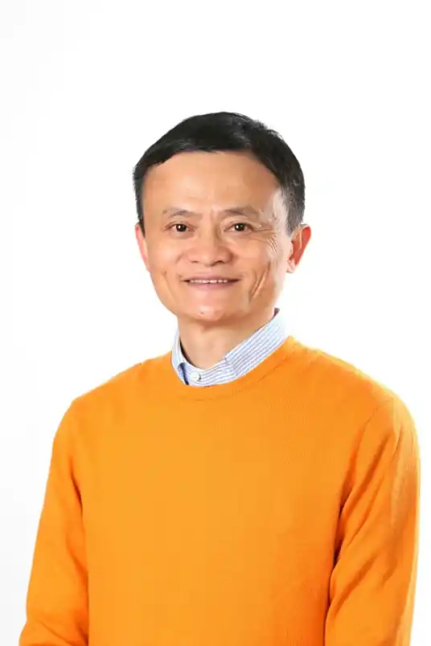

阿里巴巴主要创始人，阿里巴巴原首席执行官(CEO)、董事局原主席
马云于1988年毕业于杭州师范大学
海博翻译社;1995年,与妻子筹借10万元创办
中国黄页。1999年3月10日,联合18人在杭州湖畔花园共同创办阿里巴巴。2003年5月10日,布局C2C市场,正式推出淘宝网。2006年,卸任阿里巴巴总裁职位。2007年11月6日,阿里巴巴在香港主板上市,发行价格13.5港元,市值1996亿港元。2013年,成立菜鸟网络科技有限公司，布局物流业,同年卸任阿里巴巴集团首席执行官。2019年9月5日,卸任浙江阿里巴巴小额贷款股份有限公司董事长 ,9月10日,卸任阿里巴巴董事局主席 ,11月26日, 阿里巴巴在香港挂牌上市,募集资金880亿港元,总市值超过4万亿港元 。2020年9月30日,退出阿里巴巴董事职务。
中国黄页。1999年3月10日,联合18人在杭州湖畔花园共同创办阿里巴巴。2003年5月10日,布局C2C市场,正式推出淘宝网。2006年,卸任阿里巴巴总裁职位。2007年11月6日,阿里巴巴在香港主板上市,发行价格13.5港元,市值1996亿港元。2013年,成立菜鸟网络科技有限公司，布局物流业,同年卸任阿里巴巴集团首席执行官。2019年9月5日,卸任浙江阿里巴巴小额贷款股份有限公司董事长 ,9月10日,卸任阿里巴巴董事局主席 ,11月26日, 阿里巴巴在香港挂牌上市,募集资金880亿港元,总市值超过4万亿港元 。2020年9月30日,退出阿里巴巴董事职务。 马云于2014年、2018年、2019年、2020年入选
胡润和
福布斯中国富豪榜第一位,先后四次问鼎中国首富;曾入选改革开放40年百名杰出民营企业家名单,《时代》全球100位最有影响力人物,亚洲百大商业人物,《财富》中国最具影响力的50位商界领袖,福布斯全球最有权力人物，世界最具影响力十大华商人物，中国互联网年度人物等荣誉榜单。